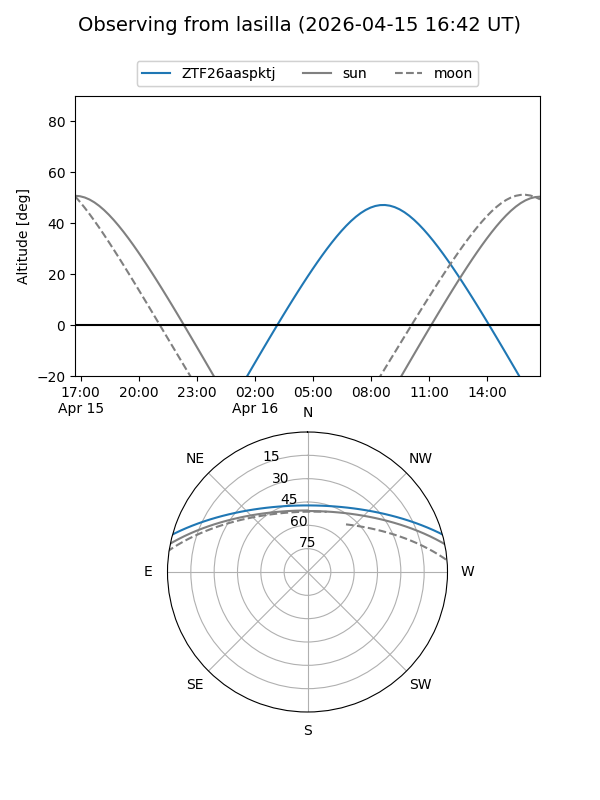
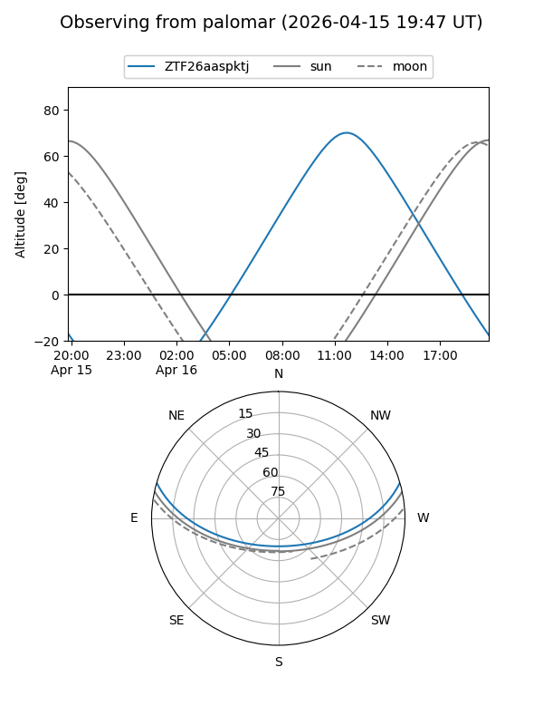

ZTF26aaspktj
Target ZTF26aaspktj at 2026-04-15 13:16
Aliases and brokers:
FINK: link
Lasair: link
ALeRCE: link
alt names
ZTF26aaspktj (ztf,fink_ztf)
Coordinates:
equatorial (ra, dec) = 262.7585,+13.56880
equatorial (HMS+DMS) = 17:31:02.04,+13:34:07.67
galactic (l, b) = (36.4714,+23.84788)
Flags:
Photometry:
last ztfg=17.31
1 ztfg detections
Lightcurve
Visibility


Additional plots